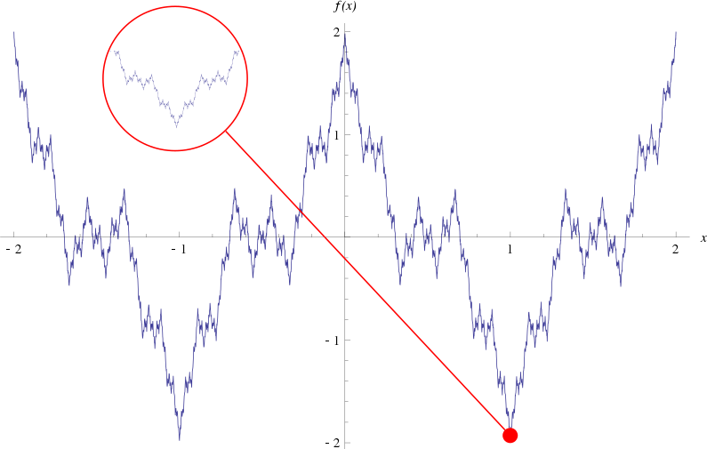
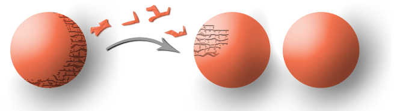
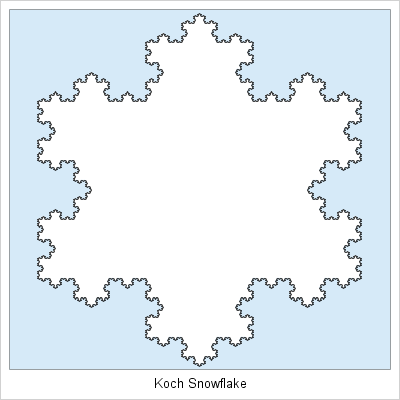
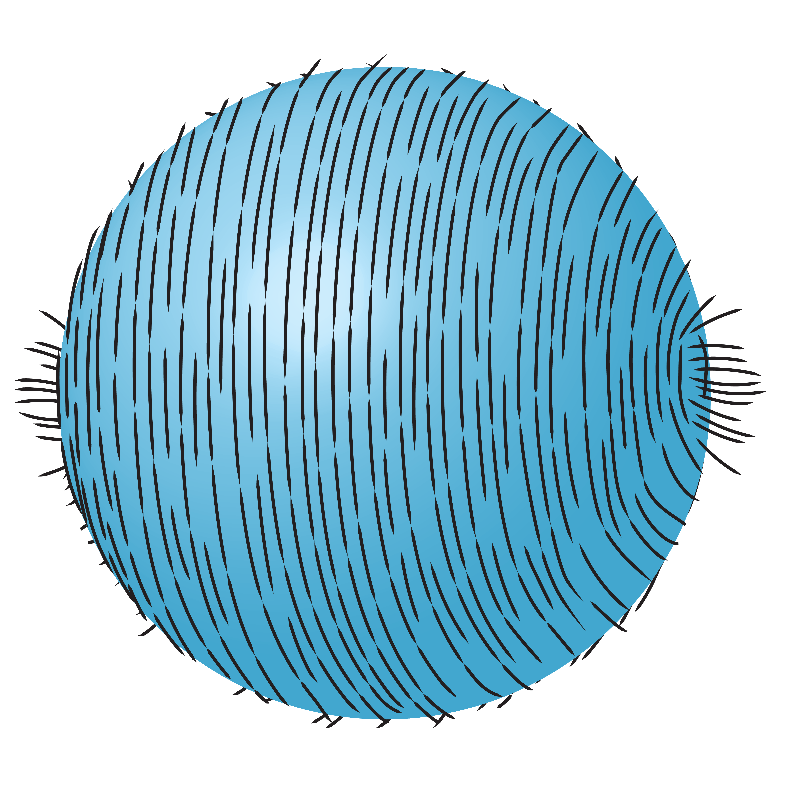

Mathematics & History
Fun Stuff
A collection of fascinating problems, stories, and ideas from the world of mathematics.
Mathematical Fun
The Millennium Prize Problems
In 2000, the Clay Mathematics Institute announced seven of the most challenging unsolved problems in mathematics. A prize of $1 million is offered for a correct solution to each problem.
Concerns the location of the non-trivial zeros of the Riemann zeta function and is deeply connected with the distribution of prime numbers.
Asks whether every problem whose solution can be verified quickly can also be solved quickly.
Concerns whether smooth solutions of the three-dimensional Navier–Stokes equations always exist and remain smooth.
Seeks a rigorous mathematical foundation for Yang–Mills theory and an explanation of the existence of a mass gap.
Relates the arithmetic properties of elliptic curves to the behavior of their associated L-functions.
Concerns which cohomology classes on certain algebraic varieties can be represented by algebraic cycles.
It asks whether every three-dimensional space that is closed and has no holes is essentially the same as a three-dimensional sphere. The conjecture was proved by Grigori Perelman in the early 2000s.
A Glimpse into Mathematical History
Mathematics has developed over thousands of years, with important contributions from many civilizations. Some mathematical ideas that appear modern have surprisingly ancient origins.
Euclid
Around 300 BCE, Euclid organized much of the known geometry of his time in his famous work Elements. His proof that there are infinitely many primes remains one of the most celebrated arguments in mathematics.
Archimedes
Archimedes made fundamental contributions to geometry, mechanics, and the study of areas and volumes. His work anticipated ideas that would later become important in calculus.
Aryabhata
The Indian mathematician and astronomer Aryabhata composed the Āryabhaṭīya around 499 CE, making important contributions to arithmetic, algebra, trigonometry, and astronomy.
Srinivasa Ramanujan
Ramanujan produced remarkable results in number theory, infinite series, continued fractions, and related areas despite having little formal mathematical training.
A Beautiful Mathematical Identity
Euler's identity is often regarded as one of the most beautiful formulas in mathematics:
It brings together five fundamental mathematical constants — \(e\), \(i\), \(\pi\), \(1\), and \(0\) — in a remarkably compact equation.
A Smooth-Looking Curve with No Tangent Anywhere

Can a curve be continuous everywhere but have no tangent at any point? Surprisingly, yes. The famous Weierstrass function is continuous everywhere but differentiable nowhere.
The Banach–Tarski Paradox

A remarkable result in mathematics says that, under the assumptions of set theory, a solid ball can be decomposed into finitely many pieces and those pieces can be rearranged to form two solid balls identical in size to the original. The pieces involved are highly non-ordinary sets and cannot be constructed physically.
A Shape with Finite Area but Infinite Perimeter

Some geometric objects behave very differently from ordinary shapes. The famous Koch snowflake encloses a finite area, but its boundary has infinite length. This surprising example shows how complicated geometry can arise from a simple repeated construction.
The Hairy Ball Theorem

Imagine trying to comb the hair on a perfectly round ball. No matter how carefully you comb it, there must always be at least one point where the hair sticks up or forms a cowlick.
A Mathematical Proof Checked by a Computer
The Four-Color Theorem states that every map drawn on a plane can be colored using at most four colors so that neighboring regions have different colors. Its proof, completed in 1976, was one of the first major mathematical proofs to rely substantially on computer-assisted verification.
Numbers That Cannot Be Explicitly Described
There are far more real numbers than there are finite mathematical descriptions. Consequently, almost every real number cannot be individually specified by a finite description or formula. Such numbers exist mathematically even though we cannot explicitly write down a particular one.